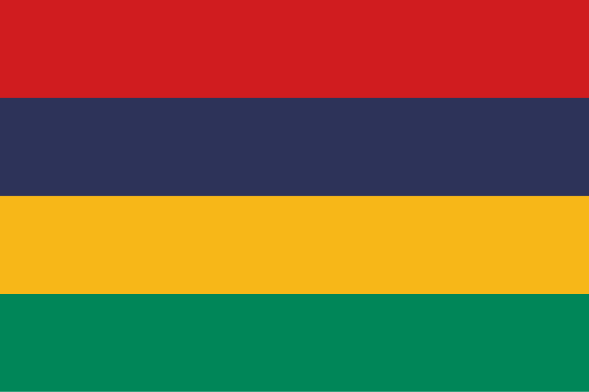

Maurícia
 A Maurícia, oficialmente República da Maurícia, é um país insular localizado no Oceano Índico, a leste de Madagascar e a sudoeste da Ilha de Reunião. Com uma área de aproximadamente 2.040 km², é conhecida por suas praias paradisíacas, recifes de coral e montanhas vulcânicas. A capital é Port Louis, principal centro econômico e administrativo do país. A população da Maurícia é extremamente diversa, formada por descendentes de indianos, africanos, chineses e europeus, refletindo um passado marcado pelo comércio colonial, escravidão e migrações. O país é uma democracia parlamentar estável, membro da ONU, União Africana e Comunidade de Desenvolvimento da África Austral (SADC), destacando-se por sua economia baseada em turismo, agricultura, serviços financeiros e tecnologia da informação.
História
A história da Maurícia começou com a colonização por europeus a partir do século XVI. Inicialmente desabitada, a ilha foi visitada por navegadores portugueses, mas foi os holandeses que estabeleceram a primeira colônia em 1638, introduzindo plantações de cana-de-açúcar e espécies como o tamarindo e a vaca. Os holandeses abandonaram a ilha no século XVIII, e os franceses assumiram o controle, renomeando-a Isle de France e consolidando plantações de açúcar com trabalho escravo africano. Em 1810, durante as Guerras Napoleônicas, os britânicos conquistaram a ilha, mantendo o sistema de produção de açúcar e abolindo a escravidão em 1835.
Após a abolição, trabalhadores indianos foram trazidos para trabalhar nas plantações, criando a base da diversidade étnica atual. A Maurícia tornou-se independente do Reino Unido em 1968, adotando uma república em 1992. Desde então, o país tem se destacado por sua estabilidade política, crescimento econômico e harmonia social entre os diferentes grupos étnicos e religiosos.
Cultura
A cultura da Maurícia é uma mistura vibrante de influências indianas, africanas, francesas e chinesas. O país possui uma sociedade multicultural, onde coexistem diversas religiões, incluindo hinduísmo, cristianismo, islamismo e budismo, celebrando festivais como Diwali, Eid, Natal e o Ano Novo Chinês. A música tradicional inclui sega e bhojpuri, que são danças e canções folclóricas acompanhadas de instrumentos como o ravanne, o maravanne e o triangle. A gastronomia é igualmente diversificada, combinando pratos à base de frutos do mar, especiarias indianas e receitas francesas e chinesas.
As línguas oficiais são o inglês e o francês, mas a língua mais falada no dia a dia é o crioulo mauriciano. A arquitetura da ilha combina estilos coloniais franceses e britânicos, com mercados vibrantes, templos hindus coloridos e mesquitas históricas. Essa fusão cultural faz da Maurícia um país único, onde a tradição e a modernidade coexistem harmoniosamente.


Clima
A Maurícia apresenta clima tropical, quente e úmido, com duas estações bem definidas: o verão, de novembro a abril, caracterizado por altas temperaturas, umidade elevada e chuvas intensas, e o inverno, de maio a outubro, mais seco e ameno. A ilha está sujeita a ciclones tropicais entre janeiro e março, que podem causar fortes ventos e chuvas. O clima favorável e as praias paradisíacas tornam a Maurícia um destino turístico popular durante o ano todo.
Biodiversidade
A biodiversidade da Maurícia é única, marcada por espécies endêmicas de fauna e flora, muitas das quais estão ameaçadas de extinção. A ilha abriga florestas tropicais, recifes de coral, manguezais e zonas costeiras ricas em vida marinha, incluindo tartarugas, golfinhos e uma grande variedade de peixes e aves. Espécies icônicas, como o dodô, tornaram-se símbolos da história natural da ilha, apesar de estarem extintas. Áreas protegidas, como o Parque Nacional Black River Gorges e reservas marinhas, são essenciais para conservar a biodiversidade e promover o ecoturismo sustentável.


Cidades
As cidades da Maurícia refletem a diversidade cultural e econômica do país. Port Louis, a capital, concentra governo, comércio e indústria, além de oferecer um vibrante mercado local e arquitetura colonial. Curepipe é conhecida pelo clima mais fresco e por centros comerciais, enquanto Grand Baie é famosa pelas praias, turismo e vida noturna. Outras cidades importantes incluem Flic-en-Flac, Mahébourg e Quatre Bornes, que combinam atividades econômicas, culturais e turísticas. As cidades mauricianas são centros dinâmicos que equilibram tradição, modernidade e diversidade multicultural.